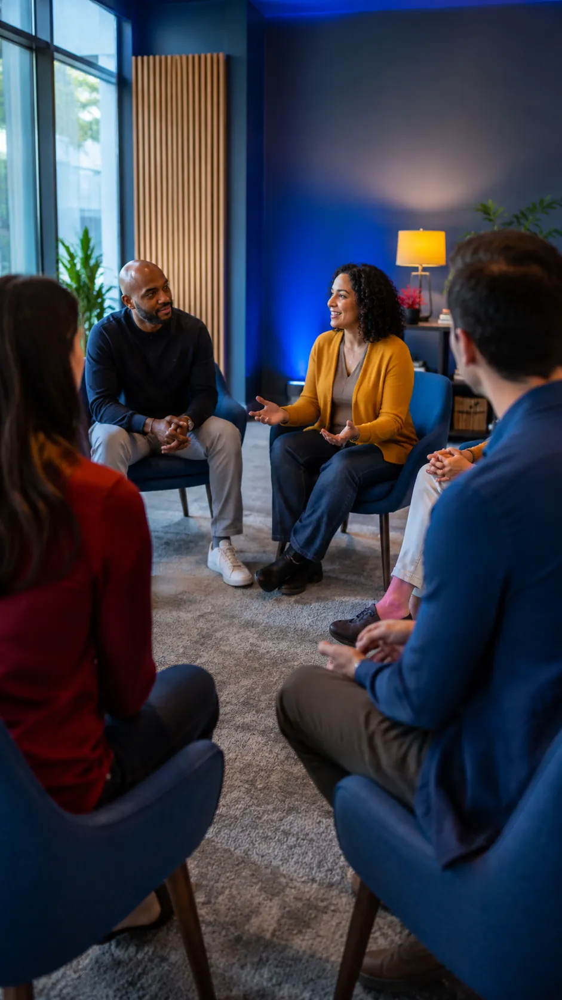
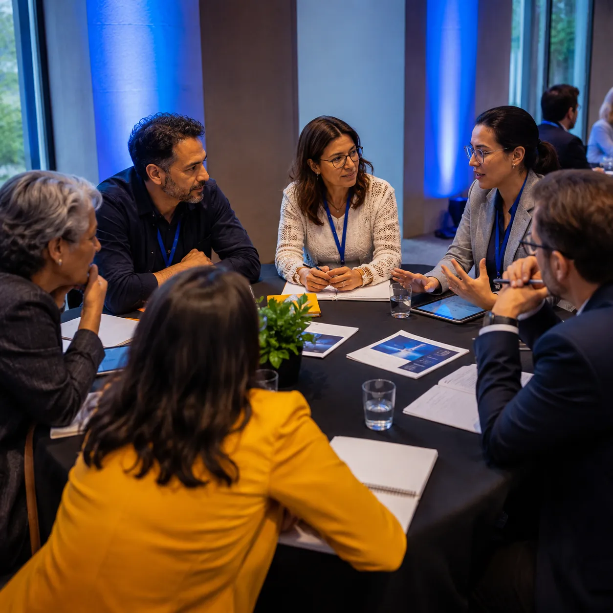
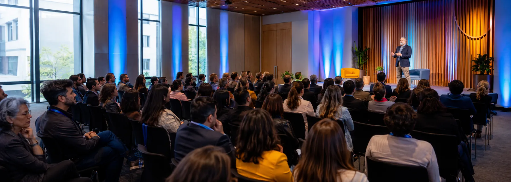

Escuelas y universidades
Equipos de conducción, orientación y preceptoría. Protocolo de detección y acompañamiento por curso.
Ramos Mejía · Capacitamos en todo el país
Capacitaciones, charlas, conferencias y congresos en prevención del suicidio y salud mental, para escuelas, empresas, equipos de salud y organismos públicos.
Programas presenciales y virtuales, con certificado de asistencia.

La Red
La mayoría de las señales de riesgo aparecen delante de alguien que no es profesional de la salud mental: una preceptora, un jefe de turno, un entrenador, una compañera de escritorio. Ese alguien casi nunca sabe cómo preguntar, y el miedo a equivocarse termina en silencio.
Nuestro trabajo es sacar ese tema del terreno de la intuición. Damos herramientas concretas —qué observar, qué preguntar, a quién derivar y en qué plazo— y las dejamos escritas en un protocolo que la institución puede sostener cuando nosotros ya no estamos.
Nuestras propuestas
Programas de dos a seis jornadas para equipos que necesitan quedarse con algo escrito: detección temprana, primeros auxilios psicológicos y armado del protocolo interno de la institución.
Exposición de apertura o cierre para auditorios grandes, con un eje elegido junto a la organización. Pensada para instalar el tema y comprometer a la conducción, no solo a los equipos.
Encuentros breves para escuelas, clubes, empresas y organizaciones sociales. El formato más simple para empezar: qué es una señal de riesgo, qué hacer con ella y a dónde derivar en el barrio.
Organizamos el congreso completo: convocatoria de panelistas, armado del programa, moderación de mesas y acreditación. También sumamos paneles a jornadas que ya tenga tu institución.
Cada persona formada deja de estar sola frente a la señal.
Casi siempre hay alguien que notó algo: un cambio de humor, una frase suelta, una ausencia repetida. Pero si esa persona no sabe qué hacer con lo que vio, la señal muere ahí.
Formamos a quien ya está en contacto: docentes, referentes de RR.HH., entrenadores, personal de guardia. En una jornada dejan de improvisar y empiezan a tener un procedimiento.
Cada persona formada sabe a quién avisar, con qué palabras y en qué plazo. Ahí se arman los vínculos que antes no existían: dirección, familia, servicio de salud, guardia.
Cuando la institución completa está formada, la respuesta deja de depender de quién estaba de turno. Eso es lo que dejamos instalado: una red que no se apaga cuando nos vamos.
Programas
Se dictan sueltos o combinados en un programa a medida. Abrí cada uno para ver el contenido y a quién está dirigido.

Qué cambios de conducta, de lenguaje y de vínculo funcionan como alerta, y cómo distinguir un malestar esperable de una situación que necesita intervención. Trabajamos con casos reales anonimizados del ámbito de cada grupo.
Qué hacer en la primera conversación: cómo abrir el tema, cómo preguntar de forma directa sin dañar, cómo sostener el momento y cómo cerrar con un acuerdo concreto de acompañamiento y derivación.
Comunicación responsable para quienes hablan en público o escriben: qué se dice, qué no se dice y por qué. Dirigido a equipos de comunicación institucional, prensa, docentes y responsables de redes.
Cómo acompañar a un curso, un equipo o un barrio después de una muerte por suicidio: qué comunicar, en qué orden, a quién acompañar primero y cómo cuidar a los referentes que quedan sosteniendo al resto.
Desgaste, agotamiento y carga emocional en quienes acompañan todos los días. Herramientas de cuidado del propio equipo y armado de espacios de supervisión que se puedan sostener en el tiempo.
Para quién
Nos contrata quien tiene gente a cargo y necesita que su equipo sepa cómo responder. Estas son las seis realidades con las que más trabajamos.
Equipos de conducción, orientación y preceptoría. Protocolo de detección y acompañamiento por curso.
Programas de bienestar que no se quedan en el afiche: referentes formados por sector y circuito de derivación.
Guardias, centros de atención primaria y consultorios. Foco en evaluación de riesgo y cuidado del propio equipo.
Formación de agentes territoriales y armado de la red local de derivación con los recursos que ya existen.
Entrenadores, coordinadores y voluntarios: los adultos que muchos adolescentes ven todos los días.
Personal expuesto a escenas críticas. Prevención del desgaste y protocolos de intervención en crisis.
Lo que queda después
Dejamos de improvisar. Hoy tenemos un protocolo escrito, tres referentes formados por turno y una carpeta que se le entrega a cada preceptor nuevo.
Lo que más nos sirvió fue la parte incómoda: aprender a preguntar directo. Nadie de nuestro equipo se animaba antes de la jornada.
Nos acompañaron en la peor semana del club. La postvención estuvo pensada para los chicos y también para los entrenadores, que nadie mira.
Contacto
Escribinos por WhatsApp y en el mismo día te devolvemos una propuesta con formato sugerido, carga horaria y presupuesto.
WhatsApp 11 5669‑0586

Próximo paso